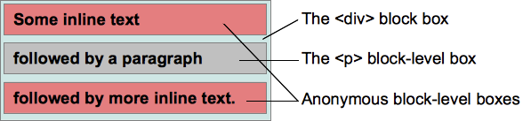
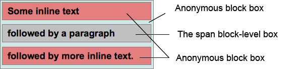

加深一下盒模型的理解~
盒模型
所有HTML元素可以看作盒子。CSS盒模型本质上是一个盒子，包括 内容区域(content)、内边距区域(padding)、边框区域(border)、外边距区域(margin)。
-
内容区域 由内容边界限制，容纳着元素的“真实”内容，例如文本、图像，或是一个视频播放器。
如果
box-sizing为content-box（默认），则内容区域的大小可明确地通过width、min-width、max-width、height、min-height和max-height控制。 -
内边距区域 由内边距边界限制，扩展自内容区域，负责延伸内容区域的背景，填充元素中内容与边框的间距。内边距的粗细可以由
padding-top、padding-right、padding-bottom、padding-left，和简写属性padding控制。 -
边框区域 由边框边界限制，扩展自内边距区域，是容纳边框的区域。边框的粗细由
border-width和简写的border属性控制。如果
box-sizing属性被设为border-box，那么边框区域的大小可明确地通过width、min-width,max-width、height、min-height，和max-height属性控制。假如框盒上设有背景（
background-color或background-image），背景将会一直延伸至边框的外沿（默认为在边框下层延伸，边框会盖在背景上）。此默认表现可通过 CSS 属性background-clip来改变。 -
外边距区域 由外边距边界限制，用空白区域扩展边框区域，以分开相邻的元素。外边距区域的大小由
margin-top、margin-right、margin-bottom、margin-left，和简写属性margin控制。在发生外边距合并的情况下，由于盒之间共享外边距，外边距不容易弄清楚。
盒模型又分为 标准盒模型 和 怪异盒模型
标准盒模型
标准盒模型是W3C的标准，box-sizing 为 content-box，这是默认值，盒子的width等于content的宽度。
怪异盒模型
怪异盒模型又叫做ie盒模型，它是ie的标准，box-sizing 为 border-box， 盒子的width等于content + padding + border的宽度。
视觉格式化模型
CSS 视觉格式化模型（visual formatting model）是用来处理和在视觉媒体上显示文档时使用的计算规则。
视觉格式化模型会根据CSS盒子模型将文档中的元素转换为一个个盒子，每个盒子的布局由以下因素决定：
- 盒子的尺寸：精确指定、由约束条件指定或没有指定
- 盒子的类型：行内盒子（inline）、行内级盒子（inline-level）、原子行内级盒子（atomic inline-level）、块盒子（block）
- 定位方案（positioning scheme）：普通流定位、浮动定位或绝对定位
- 文档树中的其它元素：即当前盒子的子元素或兄弟元素
- 视口尺寸与位置
- 所包含的图片的尺寸
- 其他的某些外部因素
该模型会根据盒子的边界来渲染盒子，通常盒子会创建一个包含其子元素的包含块，但是子元素并不由包含块所限制，当子元素跑到包含块的外面时称为溢出（overflow）。
盒子的生成是 CSS 视觉格式化模型的一部分，用于从文档元素生成盒子。盒子有不同的类型，盒子的类型取决于 display 属性。
下面是一些基础概念
- 块：block，一个抽象的概念，一个块在文档流上占据一个独立的区域，块与块之间在垂直方向上按照顺序依次堆叠。
- 包含块：containing block，包含其他盒子的块称为包含块。
- 盒子：box，一个抽象的概念，由CSS引擎根据文档中的内容所创建，主要用于文档元素的定位、布局和格式化等用途。盒子与元素并不是一一对应的，有时多个元素会合并生成一个盒子，有时一个元素会生成多个盒子（如匿名盒子）。
-
块级元素：block-level element，元素的
display为block、list-item、table时，该元素将成为块级元素。元素是否是块级元素仅是元素本身的属性，并不直接用于格式化上下文的创建或布局。 - 块级盒子：block-level box，由块级元素生成。一个块级元素至少会生成一个块级盒子，但也有可能生成多个（例如列表项元素）。
- 块盒子：block box，如果一个块级盒子同时也是一个块容器盒子（见下），则称其为块盒子。除具名块盒子之外，还有一类块盒子是匿名的，称为匿名块盒子（Anonymous block box），匿名盒子无法被CSS选择符选中。
- 块容器盒子：block container box或block containing box，块容器盒子侧重于当前盒子作为“容器”的这一角色，它不参与当前块的布局和定位，它所描述的仅仅是当前盒子与其后代之间的关系。换句话说，块容器盒子主要用于确定其子元素的定位、布局等。
注意：盒子分为“块盒子”和“块级盒子”两种，但元素只有“块级元素”，而没有“块元素”。下面的“行内级元素”也是一样。
-
行内级元素：inline-level element，
display为inline、inline-block、inline-table的元素称为行内级元素。与块级元素一样，元素是否是行内级元素仅是元素本身的属性，并不直接用于格式化上下文的创建或布局。 - 行内级盒子：inline-level box，由行内级元素生成。行内级盒子包括行内盒子和原子行内级盒子两种，区别在于该盒子是否参与行内格式化上下文的创建。
- 行内盒子：inline box，参与行内格式化上下文创建的行内级盒子称为行内盒子。与块盒子类似，行内盒子也分为具名行内盒子和匿名行内盒子（anonymous inline box）两种。
- 原子行内级盒子：atomic inline-level box，不参与行内格式化上下文创建的行内级盒子。原子行内级盒子一开始叫做原子行内盒子（atomic inline box），后被修正。原子行内级盒子的内容不会拆分成多行显示。
块盒子
块级元素: display 为 block、list-item 或 table 。
一个块级元素会被格式化成一个块（例如文章的一个段落），默认按照垂直方向依次排列。
每个块级盒子都会参与BFC 块格式化上下文（block formatting context）的创建，而每个块级元素都会至少生成一个块级盒子，即主块级盒子（principal block-level box）。
有一些元素，比如列表项会生成额外的盒子来放置项目符号，而那些会生成列表项的元素可能会生成更多的盒子。不过，多数元素只生成一个主块级盒子。
主块级盒子包含由后代元素生成的盒子以及内容，同时它也会参与定位方案。
一个块级盒子可能也是一个块容器盒子。
块容器盒子（block container box）要么只包含其它块级盒子，要么只包含行内盒子并同时创建一个行内IFC 格式化上下文（inline formatting context）。
块级盒子与块容器盒子的不同点:
- 前者描述了元素与其父元素和兄弟元素之间的行为
- 后者描述了元素跟其后代之间的行为。
有些块级盒子并不是块容器盒子，比如表格；而有些块容器盒子也不是块级盒子，比如非替换行内块和非替换表格单元格。
一个同时是块容器盒子的块级盒子称为块盒子（block box）。
匿名块盒子
匿名盒子（anonymous boxes）：不能用CSS选择符选中。
情况一：块包含盒子可能既包含行内级盒子，又包含块级盒子，此时，就会在相邻的行内级盒子外创建匿名块盒子。
考虑下面的HTML代码，假设<div>和<p>都保持默认的样式（即它们的 display 为 block）：
<div>
Some inline text
<p>followed by a paragraph</p>
followed by more inline text.
</div>
此时会产生两个匿名块盒子：一个是
<p>元素前面的那些文本（Some inline text），另一个是<p>元素后面的文本（followed by more inline text.）。
此时会生成下面的块结构：

显示为：
Some inline text
followed by a paragraph
followed by more inline text.
对这两个匿名盒子来说，不能被样式表赋予样式，会<div>从那里继承那些可继承的属性，如 color。其他不可继承的属性则会设置为 initial，比如，因为没有为它们指定 background-color，因此其具有默认的透明背景。类似地，两个匿名盒子的文本颜色总是一样的。
一个行内盒子中包含一或多个块盒子。
包含块盒子的盒子会拆分为两个行内盒子，分别位于块盒子的前面和后面。块盒子前后所有行内盒子会被一个匿名块盒子包裹，块盒子成为这两个匿名块盒子的兄弟盒子。
如果有多个块盒子，而它们中间又没有行内元素，则会在这些盒子的前面和后面创建两个匿名块盒子。
考虑下面的HTML代码，假设<p>的 display 为 inline，<span>的 display 为 block：
<p>
Some
<em>inline</em>
text
<span>followed by a paragraph</span>
followed by more inline text.
</p>
此时会产生两个匿名块盒子：一个是
<span>元素前面的文本（Some inline text），另一个是其之后的文本（followed by more inline text.）。
此时会生成下面的块结构：

显示为：
Some inline text
followed by a paragraph
followed by more inline text.
行内盒子
行内级元素：元素的 display 属性为 inline、inline-block 或 inline-table。
显示时，它不会生成内容块，但是可以与其他行内级内容一起显示为多行。一个典型的例子是包含多种格式内容（如强调文本、图片等）的段落，就可以由行内级元素组成。
行内级元素会生成行内级盒子，该盒子同时会参与行内格式化上下文（inline formatting context）的创建。行内盒子既是行内级盒子，也是一个其内容会参与创建其容器的行内格式化上下文的盒子，比如所有具有 display:inline 样式的非替换盒子。如果一个行内级盒子的内容不参与行内格式化上下文的创建，则称其为原子行内级盒子。而通过替换行内级元素或 display 值为 inline-block 或 inline-table 的元素创建的盒子不会像行内盒子一样可以被拆分为多个盒子。
在同一个行内格式化上下文中，原子行内级盒子不能拆分成多行, 例如：
<style>
span {
display:inline; /* default value*/
}
</style>
<div style="width:20em;">
The text in the span <span>can be split in several
lines as it</span> is an inline box.
</div>
上述代码可能显示为：
The text in the span can be split into several
lines as it is an inline box.
而
<style>
span {
display:inline-block;
}
</style>
<div style="width:20em;">
The text in the span <span>cannot be split in several
lines as it</span> is an inline-block box.
</div>
则可能显示为：
The text in the span
cannot be split into several lines as it is an
inline-block box.
匿名行内盒子
类似于块盒子，CSS引擎有时候也会自动创建一些行内盒子。这些行内盒子无法被选择符选中，因此是匿名的，它们从父元素那里继承那些可继承的属性，其他属性保持默认值 initial。
一种常见的情况是CSS引擎会自动为直接包含在块盒子中的文本创建一个行内格式化上下文，在这种情况下，这些文本会被一个足够大的匿名行内盒子所包含。但是如果仅包含空格则有可能不会生成匿名行内盒子，因为空格有可能会由于 white-space 的设置而被移除，从而导致最终的实际内容为空。
其他类型盒子
还有其他类型的盒子例如：行盒子、Run-in盒子、表格包装器盒子、表格盒子、表格标题盒子、列盒子等等
定位规则
- 普通流：按照次序依次定位每个盒子
- 浮动：将盒子从普通流中单独拎出来，将其放到外层盒子的某一边
- 绝对定位：按照绝对位置来定位盒子，其位置根据盒子的包含元素所建立的绝对坐标系来计算，因此绝对定位元素有可能会覆盖其他元素
普通流
在普通流中，盒子会依次放置。在块格式化上下文中，盒子在垂直方向依次排列；而在行内格式化上下文中，盒子则水平排列。当CSS的 position 属性为 static 或 relative，并且 float 为 none 时，其布局方式为普通流。
浮动
在浮动定位中，浮动盒子会浮动到当前行的开始或尾部位置。这会导致普通流中的文本及其他内容会“流”到浮动盒子的边缘处，除非元素通过 clear 清除了前面的浮动。
一个盒子的 float 值不为 none，并且其 position 为 static 或 relative 时，该盒子为浮动定位。如果将 float 设置为 left，浮动盒子会定位到当前行盒子的开始位置（左侧），如果设置为 right，浮动盒子会定位到当前行盒子的尾部位置（右侧）。不管是左浮动还是右浮动，行盒子都会伸缩以适应浮动盒子的大小。
绝对定位
在绝对定位中，盒子会完全从当前流中移除，并且不会再与其有任何联系（此处仅指定位和位置计算，而绝对定位的元素在文档树中仍然与其他元素有父子或兄弟等关系），其位置会使用 top、bottom、left 和 right 相对其包含块进行计算。
如果元素的 position 为 absolute 或 fixed，该元素为绝对定位。
对固定位置的元素来说，其包含块为整个视口，该元素相对视口进行绝对定位，因此滚动时元素的位置并不会改变。